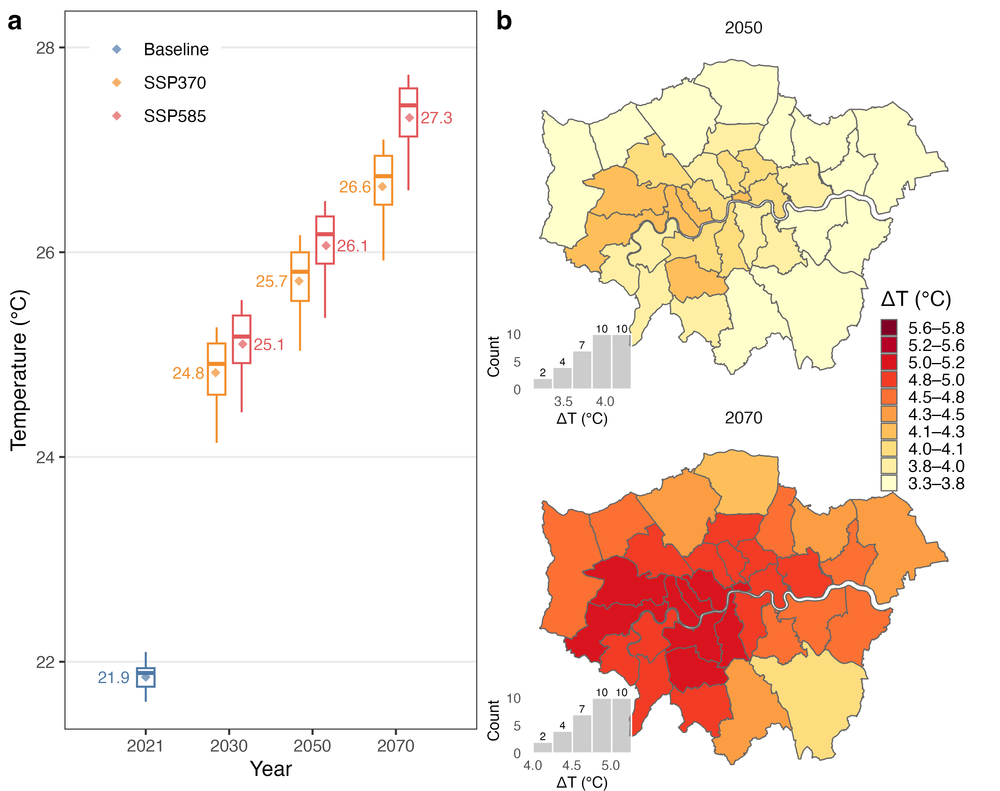
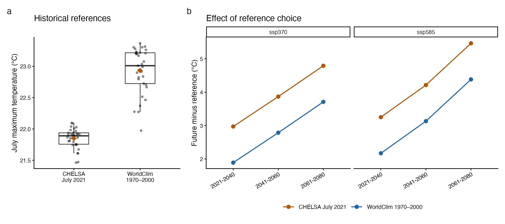
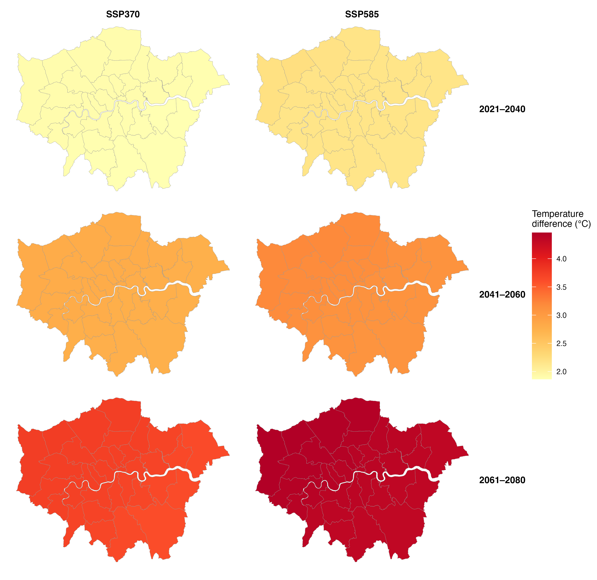

12 November 2026 · Copy-friendly HTML
Current author selection: main Figure 1 v03 and combined SSP370–SSP585 supplement v01, using automatic histogram bins. The fixed-bin trial (main v04 / SSP585 v03) is retained for comparison but is not selected. The plotting script defaults have been restored accordingly. CHELSA July 2021 is the only historical boxplot in the main figure. Panel a retains both SSPs; panel b contains only SSP370 in 2050 and 2070. A combined supplementary figure places SSP370 and SSP585 beside one another for direct comparison; the former standalone SSP585 figure is retained as a versioned comparison output. WorldClim historical data remain in the comparison and matched-baseline SM, not the main boxplot. Earlier two-reference figure v1 is preserved. Previous figures, Figure 2 and Word remain unchanged; nothing has been pushed.

Fig. 1 | Baseline and projected July temperatures across London. a, Distributions of July mean daily maximum temperature across 33 boroughs, using CHELSA for July 2021 and WorldClim for future periods under SSP370 and SSP585. Future values are averaged across three climate models (Methods); 2030, 2050 and 2070 denote 2021–2040, 2041–2060 and 2061–2080, respectively. Boxes show medians and interquartile ranges; whiskers extend to observations within 1.5 interquartile ranges. Outliers are not shown. Diamonds and labels indicate unweighted borough means. b, SSP370 temperature differences relative to CHELSA July 2021. Colours represent deciles pooled across the two displayed periods and both SSPs. Insets show borough counts in five bins, with bin boundaries and axes determined separately for each inset. Differences include product and reference-period effects and should not be interpreted solely as warming since 2021. A combined SSP370–SSP585 map figure and comparisons using a matching WorldClim historical baseline are provided in the Supplementary Information.
Mean July daily maximum temperature across London’s 33 boroughs was 21.9°C in the CHELSA July 2021 reference. WorldClim projections reached 25.7°C under SSP370 and 26.1°C under SSP585 in 2041–2060, rising to 26.6°C and 27.3°C, respectively, in 2061–2080 (Fig. 1a). Differences from the 2021 reference were therefore 3.9–4.2°C at mid-century and 4.8–5.5°C later in the century. Under SSP370, borough-level differences ranged from 3.3–4.2°C and 4.1–5.1°C in the two periods, respectively (Fig. 1b). These cross-product comparisons include reference-period and product effects; comparisons using a matching WorldClim historical baseline are presented in the Supplementary Information.
Supplementary Fig. X | Borough-level July temperature contrasts under SSP370 and SSP585. a,b, Borough-mean differences between WorldClim projections and CHELSA July 2021 under SSP370 (a) and SSP585 (b) for 2041–2060 (2050) and 2061–2080 (2070), averaged across ACCESS-CM2, IPSL-CM6A-LR and MRI-ESM2-0. Colours use common decile thresholds pooled across all four maps. Insets show borough counts in five automatically determined bins for each pathway and period; labels indicate counts across 33 boroughs, and bin boundaries and axes vary among insets. These cross-product contrasts include differences in climate product and reference period and should not be interpreted solely as warming since 2021.
The updated entry
notebook calls
build_figure1(comparison_dir, boundary, output_dir) in plot_figure1.R,
using URBAN_COOLING_DATA_ROOT. The borough production path
exits before archived plotting code; the LSOA cache workflow is
unchanged. The helper uses the validated comparison CSVs and borough
boundary documented below.
Outputs are versioned 450-dpi white-background PNGs. All earlier
files remain. The combined SSP comparison is shown above; the standalone
SSP585 map remains figure1_sm_ssp585_v02_20261111.png, and
the separate matched-WorldClim SM remains
figure1_sm_worldclim_v02_20261111.png. The source/output
checksum manifest shares the main PNG stem. Checks require 594 unique
source records and 198 ensemble borough/SSP/period values, and reproduce
table means within 1e-8°C. Main and SSP585 maps explicitly filter one
SSP before plotting, avoiding the older period-only overlay. Original
blue/orange/red boxplot colours, one-decimal mean labels, theme_bw,
YlOrRd quantile map palette, grey borough outlines and histogram insets
are restored. Main layout is a left boxplot and right vertically stacked
maps (7.2 × 5.7 in). The matched-WorldClim SM retains its own continuous
scale; do not equate its colours with the main/SSP585 discrete legend.
HTML embeds are capped at 680 pixels wide and 760 pixels tall; PNG
resolution is unchanged.
Review the new figures and legends and assign SM numbering before Word insertion. The comparison and earlier proposals below are retained as provenance.
Each histogram is built from 33 unique boroughs after averaging the
three GCMs within that SSP/period. The selected version retains the
original automatic five-bin method. Compare the labelled temperatures
and counts, not bar positions across insets: bin edges and axis ranges
are not shared. The unselected fixed-bin trial remains available in the
version table below. Bin edges/counts are exported in the current main
manifest and independently recounted using cut(); each
histogram sums to 33.
| SSP | Period | Five automatic-bin counts, left to right |
|---|---|---|
| SSP370 | 2050 | 2, 4, 7, 10, 10 |
| SSP370 | 2070 | 2, 4, 7, 10, 10 |
| SSP585 | 2050 | 2, 4, 8, 11, 8 |
| SSP585 | 2070 | 2, 5, 7, 12, 7 |
In selected v03, identical SSP370 automatic-bin counts are genuine:
its 2050 range is 3.252–4.194°C and 2070 range is 4.128–5.137°C, with
different histogram edges. Insets use grey60, white bar
borders and alpha 0.5 as in the original script. Both panel and plot
backgrounds are transparent; the earlier opaque white rectangle was an
unintended styling change.
V3 adapts the original pooled deciles to 132 displayed borough/period/SSP values, rather than including the omitted 2030 maps. This allocates more classes to the displayed range while retaining the same thresholds across all four maps. Exact thresholds are stored in the manifest; legend rounding does not change classification. There are no scenario-specific quantiles.
Files now sort by figure family, then zero-padded version, then date:
| Family | Versions available | Current |
|---|---|---|
figure1_main_v##_20261111.png |
v01: two references; v02: opaque insets; v03: transparent automatic-bin insets; v04: unselected fixed-bin trial | v03 |
figure1_sm_ssp370_ssp585_v##_20261112.png |
v01: combined four-map comparison with common decile thresholds | v01 |
figure1_sm_ssp585_v##_20261111.png |
v01: opaque insets; v02: transparent automatic-bin insets; v03: unselected fixed-bin trial | v02 |
figure1_sm_worldclim_v##_20261111.png |
v01, v02 retained | v02 |
These names replace the earlier descriptive filenames without deleting their image content. Scripts, documentation and manifest paths were updated. Select adjacent versions in Finder and use Quick Look to switch between them. The main v01 has a different aspect ratio because its layout was intentionally different; v02/v03 have identical dimensions for direct comparison.
All values are equal-weight means of 33 borough means; future values also give equal weight to ACCESS-CM2, IPSL-CM6A-LR and MRI-ESM2-0.
| Future period | SSP | Future temperature (°C) | Minus CHELSA 2021 (°C), main | Minus historical WorldClim (°C), supplement |
|---|---|---|---|---|
| 2021–2040 | SSP370 | 24.82 | 2.97 | 1.89 |
| 2021–2040 | SSP585 | 25.10 | 3.25 | 2.17 |
| 2041–2060 | SSP370 | 25.72 | 3.87 | 2.79 |
| 2041–2060 | SSP585 | 26.06 | 4.21 | 3.13 |
| 2061–2080 | SSP370 | 26.64 | 4.79 | 3.71 |
| 2061–2080 | SSP585 | 27.31 | 5.46 | 4.38 |
Interpretation: the period and SSP ordering is unchanged. Main-reference differences exceed matched-WorldClim differences by 1.0813°C in these means. The offset varies from 0.45 to 1.41°C across boroughs, so mapped spatial contrasts need not be identical; this is not merely a uniform shift of every map. Neither comparison supplies a probabilistic uncertainty interval.

Points in panel a are boroughs; diamonds show equal-borough means, boxes show medians and interquartile ranges, whiskers extend to values within 1.5 IQR. Panel b compares the two subtraction choices without altering future inputs.

Proposed legend. Projected differences in July mean daily maximum temperature relative to WorldClim v2.1’s 1970–2000 climatology. Maps show borough means for two SSPs and three future periods, averaged across ACCESS-CM2, IPSL-CM6A-LR and MRI-ESM2-0. Historical and future data use the WorldClim 30-arc-second products and the same borough cell-centre inclusion rule. Colours use a common scale. This sensitivity complements, rather than replaces, the main comparison with CHELSA July 2021.
Official WorldClim
historical documentation defines the baseline as 1970–2000 and
temperature units as °C. The selected entry is
wc2.1_30s_tmax_07.tif in the official 30-arc-second
monthly Tmax archive. Only July was downloaded (about 373 MB
compressed), not the full 4.38 GB ZIP. The downloader checks the archive
entry CRC and records the source URL, ETag and file SHA256. No source
climate values were modified.
Paths relative to the external Wellcome Trust Project Data root:
1_preprocess/UrbanCoolingModel/OfficialWorkingInputs/climate/worldclim_v21_historical/.comparison/ subfolder.figure1_baseline_comparison_20261111_v1.figures/climate_projections/.| Script | Purpose |
|---|---|
| fetch_worldclim_july.py | Selectively download the July raster with source checks |
| compare_figure1_baselines.py | Validate saved future summaries and calculate both differences |
| plot_figure1_baseline_comparison.R | Exploratory comparison and archived SM v1 |
| plot_figure1.R | Current main Figure 1 and SM v2 |
| gcm-data-clip-stats-viz.Rmd | Current main/SM entry point using plot_figure1.R; earlier code retained |
Run the Python comparison with repository path, external data-root
path and --output-dir pointing to comparison/.
Run the R plotter with three arguments: comparison directory,
AOIs/London_Borough_aoi.shp, and the PNG output directory.
Use the project’s InVEST 3.20.2 Python environment (GDAL/NumPy); the R
plotter uses ggplot2, sf and patchwork. The downloader takes the
destination directory as its single positional argument and refuses to
overwrite an existing raster.
Boundary-method verification: all 18 saved future
raster/CSV pairs were checked (594 borough/model/period/SSP records).
Their pixel counts match centre inclusion exactly and means agree within
0.0001°C. The current Python notebook says
all_touched=True, but this does not reproduce those saved
counts. The new historical summary therefore uses centres to match the
actual Figure 1 inputs, not the conflicting notebook setting. No saved
future CSV was overwritten. Native grids were retained without
resampling.